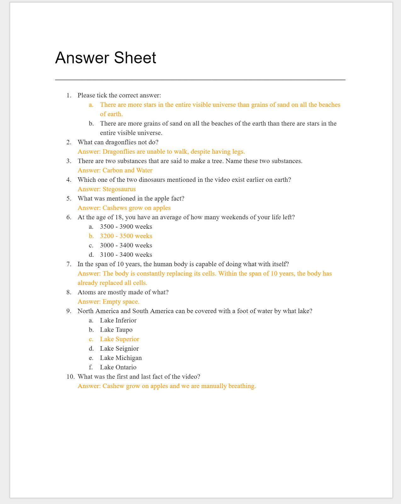

Research Methodologies
Quantitative
Our research question was the reason why we chose to undertake a qualitative research methodology. Qualitative methodology allowed the team to understand the reasons, motivators and opinions about each participant conducting this experiment (Patton, 2005) Thus this methodology guided the team to help develop ideas for testing. Furthermore it also allowed the team to undercover the trends, opinions and thoughts during the testing stage, such as the person's preference of what they usually use to take notes and if the video was played too quickly. Thus this further allowed us to analyse the data more effectively when it came to doing so. Due to time constraints and other impediments the team faced, qualitative allowed us to only have a small sample size of participants, which seemed to work well in this project.
Collection methods we used to collect data included taking videos of the participants during the duration of the experiment. This allowed us to analyse the behaviours, thoughts and comments the participants made which gave us an insight of why certain participants found our experiment difficult. An example is ‘Student H’ where although they are studious and smart, they mentioned that are not good at hand-writing or typing out notes and therefore had a lot of trouble throughout our experiment. Another example of how footage of a participant can give you insight of the data is the difference of confidence levels between each participant when note taking, where a calm participant could be taking down notes at ease with no struggles, whereas a flustered participant will rush through writing their notes and make small comments of confusion. This however is not always true as some participants could be apathetic on the outside while having an internal crisis within their minds.
Our Experiment
The experiment is constructed to duplicate the method of note taking in a class or lecture but on a smaller scale. The students will be given material to learn in a form of a video and will be further on examined. In the case of this research, the team conducted this experiment in multiple series of steps. As mentioned, the students were given time to watch a video - “Amazing Facts to Blow Your Mind Pt. 1” directed by Moffit (2012) - and were to be examined with the information given by the video.
How they take down notes is determined by their preference, whether it maybe by longhand or typed notes.
Experiment Video
Amazing Facts to Blow Your Mind Pt.1
Process
Each student was given brief time to study the notes they have taken from the video. Including time to study for the examination ensures the student will be able to retain the information they have extracted from the video. Once the student has studied and is ready for examination, a small quiz is provided to test their ability to retain information in a short period. It is also notable to consider how well the student was able to take notes during the video as they have no way to revise other than the notes they have written or typed. Though for the purpose of this experiment the research team has declined this factor from end result as it includes a significant amount of variables.
The examination only consisted of 10 questions that were based on the information from the video. The examination was computerized based. Each student was required to answer these question, but are able to leave any questions they remained uncertain. The result of these questions will be the primary source of the research team’s analysis as it represents a score that can be discussed to come to a conclusion. The following list were the questions that were given to each student (Figure 1). These questions were not randomized and were fixed to ensure equality between all students. Answers will be highlighted as orange.
Figure 1. Snippet of the questions given to each student. The answers are highlighted in orange. 